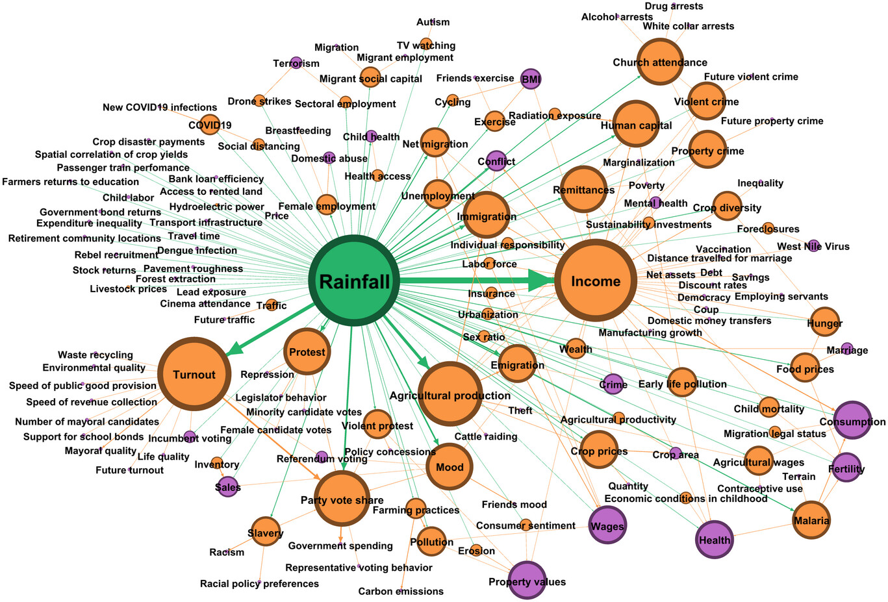

Instrumental Variables: Friend or Foe?
I’ve been trying to read more carefully about instrumental variables (IV) and make up my mind about when IV analyses are scientifically convincing.
Here’s a tension I keep running into:
Should the scientific question alone determine the causal parameter of interest?
Or is it legitimate for the target parameter to reflect an interplay between scientific interest and the identifying assumptions we actually find tenable?
IVs can be difficult to interpret when instruments are weak, who “compliers” are is opaque, exclusion restrictions are debatable, or linear models are used in settings where the true data-generating process may be nonlinear.
On the other hand, when an entire body of (aspirationally causal) literature rests on methods that try to close backdoor paths, IVs offer a genuinely different identification strategy. That seems valuable for evidence triangulation, even if IV analyses have their criticisms.
What do you think? Are you a big IV proponent? Are you an IV critic?
When do you find IV evidence persuasive?
Some literature I’ve been reading & re-reading:
Hernán, Miguel A., and James M. Robins. 2006. “Instruments for Causal Inference: An Epidemiologist’s Dream?” Epidemiology 17(4): 360–372.
Swanson, Sonja A., and Miguel A. Hernán. 2018. “The Challenging Interpretation of Instrumental Variable Estimates under Monotonicity.” International Journal of Epidemiology 47(4): 1289–1297.
Swanson, Sonja A., and Miguel A. Hernán. 2014. “Think Globally, Act Globally: An Epidemiologist’s Perspective on Instrumental Variable Estimation.” Statistical Science 29(3): 371–374.
Levis, Alexander W., Edward H. Kennedy, and Luke Keele. 2024. “Nonparametric Identification and Efficient Estimation of Causal Effects with Instrumental Variables.” arXiv preprint arXiv:2402.09332.
Fonseca, Yuri, Caio Peixoto, and Yuri Saporito. 2024. “Nonparametric Instrumental Variable Regression through Stochastic Approximate Gradients.” Advances in Neural Information Processing Systems (NeurIPS 2024).
Some choice quotes on the topic of instrumental variables:
From Swanson and Hernán 2014
Imbens states we are “limited in the questions we can answer credibly and precisely.” We agree, but there are differences between the questions we can answer and the questions we want answered. Choosing only answerable questions (e.g., identifying the LATE in some settings) can mislead decision-making efforts: our estimates may be misinterpreted as directly relevant to a decision when in fact they are only tangentially related.
From Levis, Kennedy, and Keele 2024
Often in the literature, it is noted that the choice of estimand should be based on a scientific judgement and should reflect the specific research question. However, it is often the case that there is some interplay between the estimand and the plausibility of the identification assumptions. Nowhere is this more true than in an IV analysis.
What do you think? Do you have a favorite instrumental variable?
Tell me it’s not rainfall!

From Mellon, Jonathan. 2024. “Rain, Rain, Go Away: 192 Potential Exclusion-Restriction Violations for Studies Using Weather as an Instrumental Variable.” American Journal of Political Science. Available at Wiley Online Library.
What do you think? Should IVs be banished and outcast from “rigorous science” or are they useful? Do you think researchers are putting dogma over pragmatism when it comes to IVs?
I welcome your thoughts – please feel free to share via the newly enabled Utteranc.es comments system below 🙂